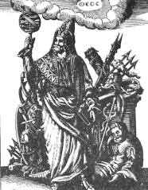
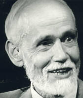

|
Thus the writers of the Corpus Hermetica attributed their philosophy to a legendary figure named Hermes Trismegistus (thrice-great).  Hermes Trigmegistus This figure is associated with the god Thoth or Hermes who was alleged to have given the Egyptians their knowledge of the arts and sciences. The main dictum of the hermetic tradition as found in the Emerald Tablet in essence states "As Above, So Below" meaning that humanity will find within itself the nature of the entire universe. Professor Wayne Shumaker, a modern historian of the occult sciences, uses an analogy to place Hermeticism within the vast history of human understanding: Again and again we are told the whole world is alive. "If therefore the world is always a living animal was, and is, and will be -- nothing in the world is mortal. Since every single part, such as it is, is always living and is in a world which is always one and is always a living animal, there is no place in the world for death" (Ascl. 29). When in our own day, C. S. Lewis' fictive character Ransom first traveled through space, the word "space," the reader is told, was a "a blasphemous libel for this empyrean ocean of radiance in which they swam. He could not call it "dead"; he felt life pouring toward him from it every minute." The Hermetic universe was similarly vitalistic, permeated with life. So is the universe of the low savage, the Naturmensch; but long before the second and third centuries of our era the primitive belief had been rationalized.The notion that humanity can discover the nature of god and the universe by looking within itself has been called The Perennial Philosophy by Aldous Huxley: Philosophia perennis -- the phrase was coined by Leibnitz; but the thing -- the metaphysic that recognizes a divine Reality substantial to the world of things and lives and minds; the psychology that finds in the soul something similar to, or even identical with, divine Reality; the ethic that places man's final end in the knowledge of the immanent and transcendent Ground of all being the thing is immemorial and universal. Rudiments of the Perennial Philosophy may be found among the traditionary lore of primitive peoples in every region of the world, and in its fully developed form it has a place in every one of the higher religions. A version of this Highest Common Factor in all preceding and subsequent theologies was first committed to writing more than twenty-five centuries ago, and since that rime the inexhaustible theme has been treated again and again, from the standpoint of every religious tradition and in all the principle languages of Asia and Europe.Huston Smith, former professor of philosophy and religion and MIT and Syracuse University, is currently affiliated with the Graduate Theological Union in Berkeley, California.  Huston Smith (courtesy Thinking Allowed Productions) Dr. Smith is the author of The Religions of Man, a classic book which has sold over two million copies, as well as Beyond the Post-Modern Mind, and Forgotten Truth. In a Thinking Allowed interview, he described his impressions of the hermetic thread that runs through all religious and spiritual traditions: The primordial tradition is intended to have the ring of being timeless -- and, I would add, spaceless as well -- because it was not only always, but everywhere. The space-time world, fits into the primordial tradition but does not exhaust it. There are reaches beyond the physical.Not all scholars accept this notion. In a recent anthology on mystical traditions, an assortment of noted scholars argued that we must recognize the enormous cultural and language differences that separate each form of mysticism. Philosopher Steven Katz summarizes this perspective: "God" can be "God," "Brahman" can be "Brahman," and nirvana can be nirvana without any reductionist attempt to equate the concept of "God" with that of "Brahman," or "Brahman" with nirvana.. Francis Yates, Giordano Bruno and The Hermetic Tradition. New York: Random House, 1969, p. 150. Yates has been one of the most active and knowledgable scholars exploring the occult roots in renaissance culture. . Wayne Shumaker, The Occult Sciences in the Renaissance. Berkeley: University of California Press, 1972, p. 225. A useful reference volume lacking both condescension and credulousness. . Aldous Huxley, The Perennial Philosophy. New York: Harper and Row, 1945. . Huston Smith, The Primordial Tradition (#S048), in Living Philosophically (#Q374), videotapes available from Thinking Allowed Productions, Berkeley, CA. . Steven T. Katz, "Language, Epistemology and Mysticism," in Steven T. Katz (ed.), Mysticism and Philosophical Analysis. New York: Oxford University Press, 1978, p. 66. |